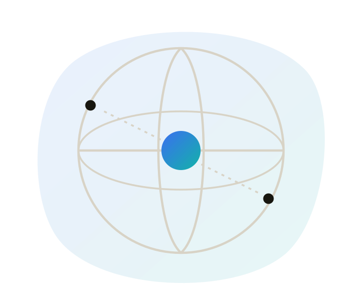

Accessibility for web
WCAG, POUR, who your site excludes when accessibility is skipped, and where to check what's actually wrong.

WCAG & POUR
WCAG, the Web Content Accessibility Guidelines, is the standard most accessibility laws and policies point to. It's organised around four principles, POUR, and each breaks down into specific, testable success criteria.

Perceivable
Content and controls can be sensed, through sight, sound, or touch, in more than one way.

Operable
Every interaction works by keyboard, not just a mouse, and no interface traps focus.

Understandable
Text is readable, behaviour is predictable, and errors explain what to do next.

Robust
Markup is valid enough that browsers and assistive tech can interpret it reliably.
Criteria are grouped into three conformance levels: A (the baseline), AA (what most organisations aim for, and what Aria checks against), and AAA (a stricter level rarely required in full). The current version is WCAG 2.2.
Who it's for
Accessibility work is often framed around screen readers, but the range of people it affects is wider than that.
Screen reader users
Navigate by headings, landmarks, and accessible names, not visual layout.
Keyboard-only users
Tab, arrow, and enter through a page instead of clicking with a mouse.
Low vision users
Rely on strong contrast, resizable text, and zoom that doesn't break layout.
Cognitive & motor differences
Benefit from predictable patterns, generous touch targets, and clear error messages.
Common issues
The same six categories, every time, across almost every site we scan.
See real before/after code examples for each of these, and how Aria detects them.
What we catch